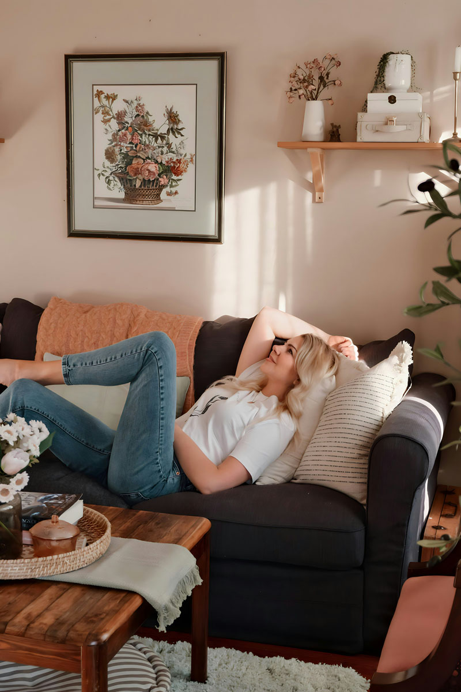

How to
Gør din stue forårsklar
Foråret er den perfekte anledning til at give stuen nyt liv. Med kunst kan du skabe varme, personlighed og lette farver, der får rummet til at føles mere åbent og indbydende. Små ændringer på væggene kan gøre en stor forskel i hele hjemmets stemning.
Vælg værker, der bringer ro, lys og inspiration ind i hverdagen. Hvad enten du er til organiske former, bløde nuancer eller farverige motiver. Kunst er ikke bare dekoration, men en måde at gøre dit hjem mere levende og personligt.
